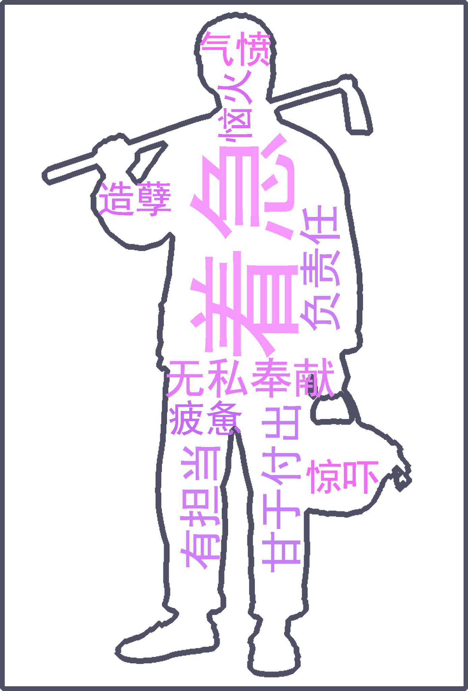
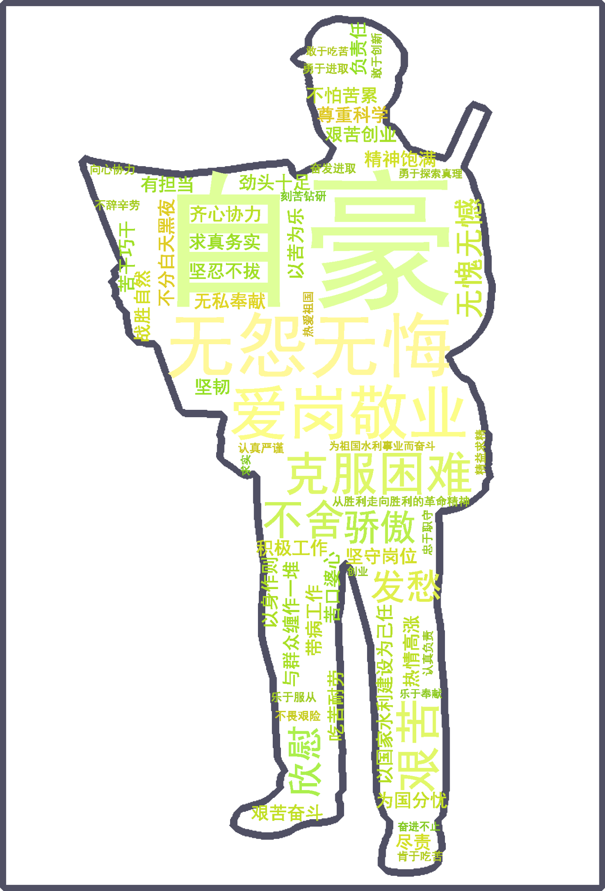
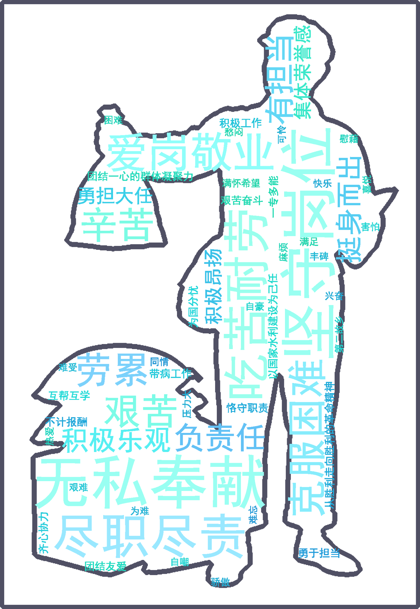
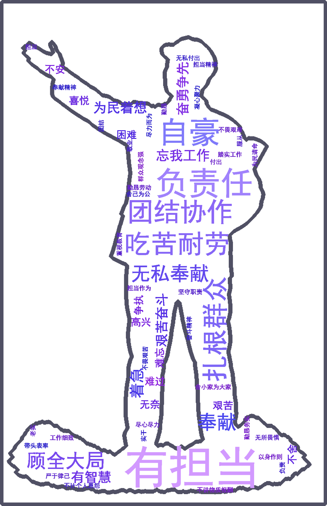
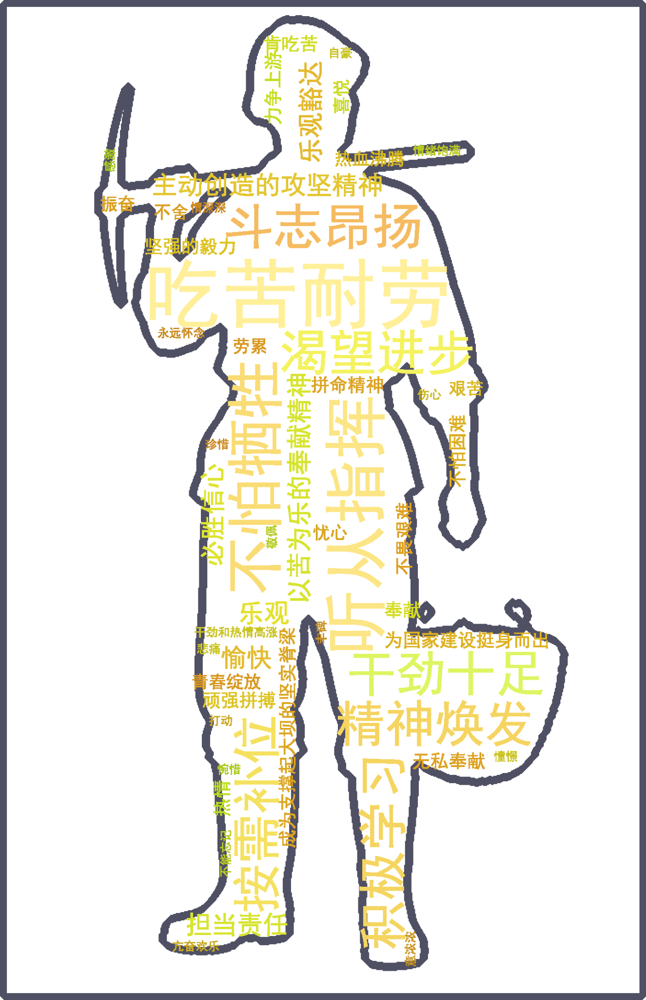
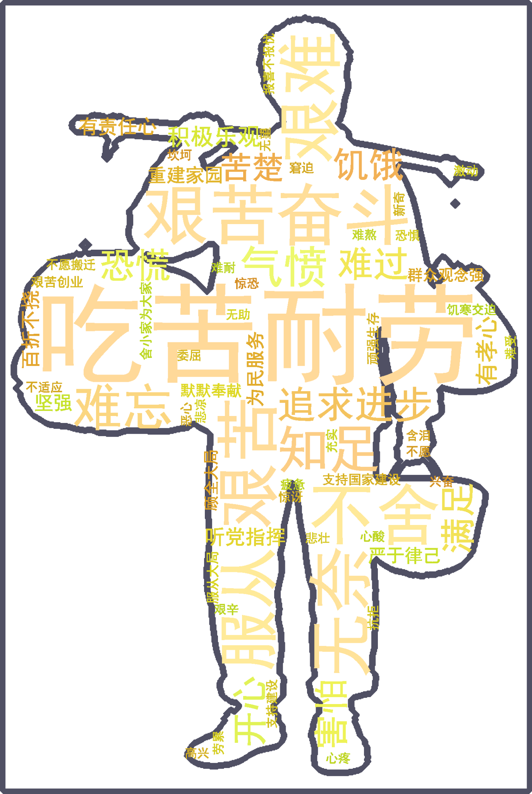

群像记忆 · 词云图谱
六类建设者群体的口述关键词






一、缘起：世纪的构想
1952年10月30日，毛泽东登临郑州市邙山，俯视脚下滔滔黄河，以诗人的浪漫说道："南方水多，北方水少，如有可能，借点水来也是可以的！"
1953年2月19日，毛泽东视察长江时，站在"长江"号军舰的甲板上问水利专家林一山："南方水多，北方水少，能不能把南方的水借给北方一些？"他用手中的铅笔在地图上久久地指着丹江口。就在这次视察中，毛泽东明确提出了"南水北调"的设想。
1958年3月25日，中央政治局成都会议，周恩来总理正式提议兴建丹江口水利枢纽工程，获得会议支持与批准。毛泽东在会上兴奋地说："打开通天河、白龙江，借长江水济黄、丹江口引汉济黄，引黄济卫，同北京联系起来了。"
1958年8月，《中共中央关于水利工作的指示》颁布，第一次正式提出"南水北调"。
1959年，中科院、水电部确定南水北调指导方针："蓄调兼施，综合利用，统筹兼顾，南北两利，以有济无，以多补少，使水尽其用，地尽其利。"
1979年，五届全国人大一次会议《政府工作报告》正式提出："兴建把长江水引到黄河以北的南水北调工程"。
丹江口建设现场 · 历史照片
1958—1959 · 图像档案
 历史照片
历史照片
 历史照片
历史照片
 历史照片
历史照片
 历史照片
历史照片
 历史照片
历史照片
二、研究论证（1979—2000）
三、审批立项（2002）
2002年10月10日，中共中央政治局常务委员会会议审议并通过了经国务院同意的《南水北调工程总体规划》。
2002年12月23日，国务院正式批复《南水北调总体规划》，规划最终调水规模448亿立方米——东线148亿m³、中线130亿m³、西线170亿m³。
2002年12月27日，南水北调工程正式开工！江苏段三潼宝工程和山东段济平干渠工程成为东线首批开工工程。
四、工程建设（2002—2014）
"四横三纵"总体布局：通过三条调水线路与长江、黄河、淮河、海河四大江河联系，实现中国水资源南北调配、东西互济。
五、试运行与验收通水（2013—2014）
南水北调东线工程创造了世界上规模最大的泵站群——东线泵站群工程。中线工程水源地丹江口水库水质常年保持国家Ⅱ类以上，"双封闭"渠道确保沿途水质安全。
六、通水运行历程
七、三线规划方案
经过数十年的勘查与论证，广大科技工作者在分析比较50多种方案的基础上，形成了东线、中线和西线调水的基本方案。规划调水总规模448亿m³，建设时间约需40—50年。
东线工程
从长江下游扬州抽引长江水，利用京杭大运河及平行河道逐级提水北送，连通洪泽湖、骆马湖、南四湖、东平湖。出东平湖后分两路：一路向北穿黄河至天津（约1156km），一路向东输水至烟台、威海。规划调水148亿m³。创造了世界上规模最大的泵站群。
中线工程
水源70%从汉江汇聚至丹江口水库，由丹江口大坝加高后调水。从河南淅川陶岔渠首出水，经方城垭口过长江与淮河分水岭，在郑州以西穿黄河，沿京广铁路西侧北上，自流至北京团城湖。总干渠长1432km，规划调水130亿m³。
西线工程
在长江上游通天河、雅砻江、大渡河筑坝建库，开凿穿巴颜喀拉山输水隧洞调水入黄河上游。解决青、甘、宁、蒙、陕、晋6省缺水问题。规划调水170亿m³。地处青藏高原，海拔2900—4000m，目前仍在规划论证阶段。
八、建设成果
南水北调工程已成为优化水资源配置、保障群众饮水安全、复苏河湖生态环境、畅通南北经济循环的"生命线"。
供水效益
"南水"已占北京城区供水70%以上，天津市主城区供水几乎全部为"南水"，河南省10余个省辖市用上"南水"，郑州中心城区90%以上居民用上"南水"。
生态效益
累计向北方50多条河流生态补水超118亿m³。滹沱河、瀑河、大清河、白洋淀等重现生机，永定河实现1996年来865km河道首次全线通水。北京密云水库蓄水量突破历史最高纪录35.79亿m³。
地下水恢复
北京平原区地下水位累计回升超10米。河北省浅层地下水水位由治理前每年上升0.48m增加到0.74m。6省市压减城区地下水超采量超30亿m³。
九、移民奉献：无言丰碑
南水北调丹江口库区移民共搬迁安置农村移民16.59万人，两次移民共计46.9万人。淹没土地面积144km²，各项淹没损失达90多亿元。
在整个移民搬迁过程中，没有发生一起移民重大伤亡事件，却有300多名干部晕倒在搬迁现场，100多名干部因公负伤，10名干部倒下牺牲。他们的名字和事迹，在中国水利史上树起了一座无言丰碑。
为保证水质，十堰市关停"十五小"企业329家、关闭黄姜加工企业106家，6万职工下岗。汉中市严控矿产资源开发，每年影响利税近20亿元。安康市累计关停"两高"企业300余家，直接减少产值近300亿。商洛市每年减少税收约8亿元。
"1100多万南阳人民，像爱护自己的眼睛一样呵护着丹江口水库清水。"
十、深远意义
社会意义
解决北方缺水问题，增加水资源承载能力；使北方地区逐步成为水资源配置合理、水环境良好的节水防污型社会；缓解水资源短缺对城市化发展的制约。
经济意义
为北方经济发展提供水资源保障，支撑受水区40多座大中城市超16万亿GDP增长，优化产业结构，促进经济结构战略性调整。
生态意义
改善黄淮海地区生态环境；改善北方饮水质量，解决高氟水、苦咸水等水质问题；回补北方地下水，保护湿地和生物多样性。
"南水北调工程事关战略全局、事关长远发展、事关人民福祉。一渠清水奔流北上不舍昼夜，寄托着民族复兴的伟大梦想，涌动着家国天下的赤子情怀。"